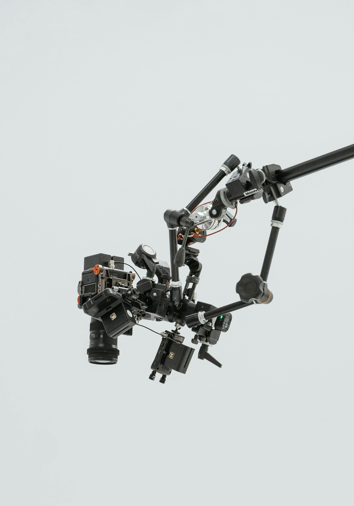

MISSION
To provide innovative digital technologies to inform, engage, and connect voices and interests of communities.

WHO ARE WE
We are a dynamic team passionate about delivering top-notch media services worldwide. From quality photography to engaging videography, we cater to individuals, firms, schools, and various other groups. Our projects span across Uganda and beyond, fostering innovation and creativity in every endeavor.
OBJECTIVES
- To provide individuals and organizations the necessary resources and support for producing programming for access channels, including training, equipment, production facilities, and channel time.
- To promote and develop activities, concerns, and interests of the citizens of Uganda in a manner that encourages a free exchange of ideas and information.
- To develop funding resources and administer such funds to promote education and government programming in the public interest.